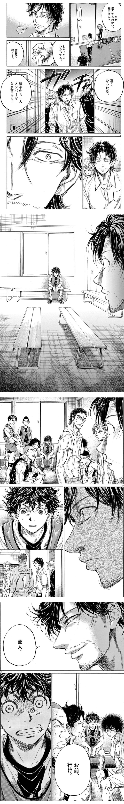
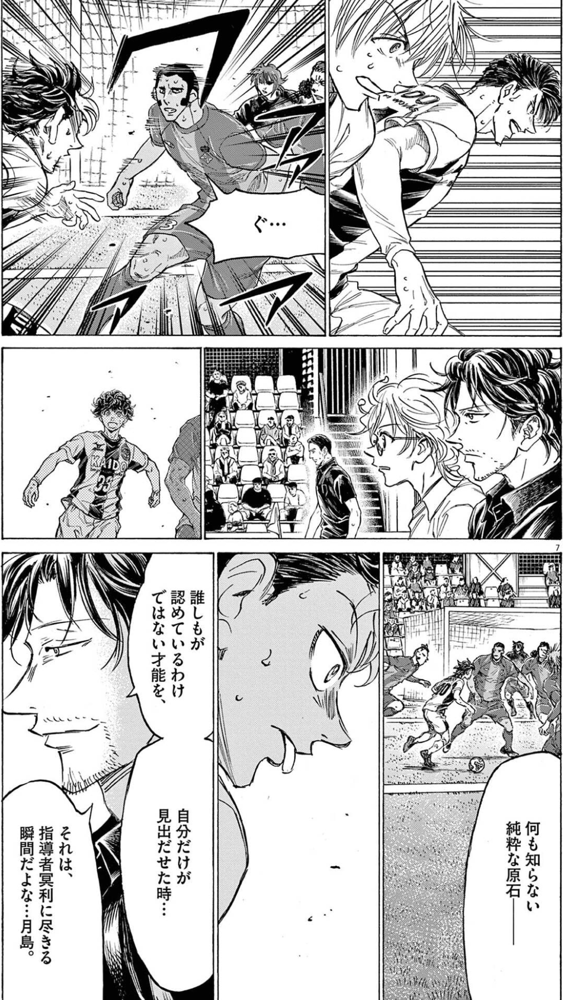
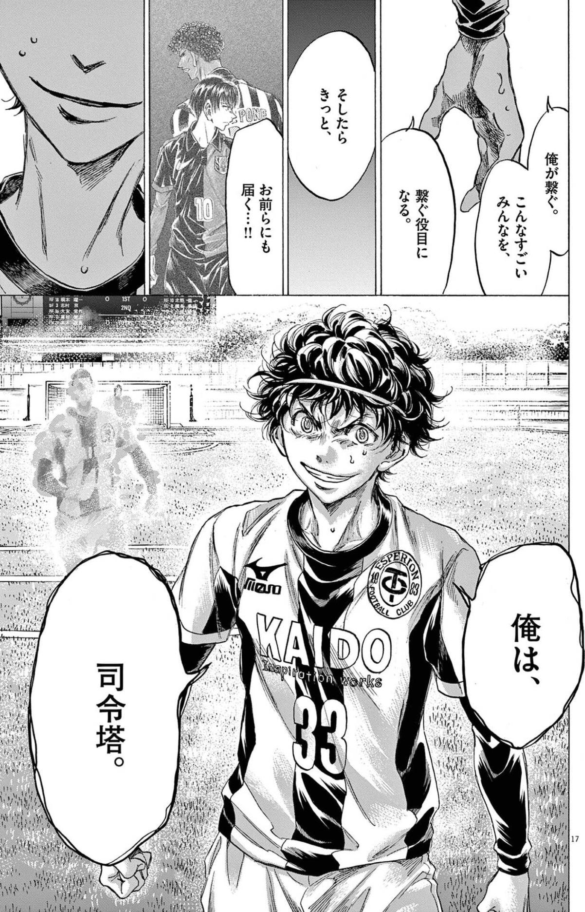
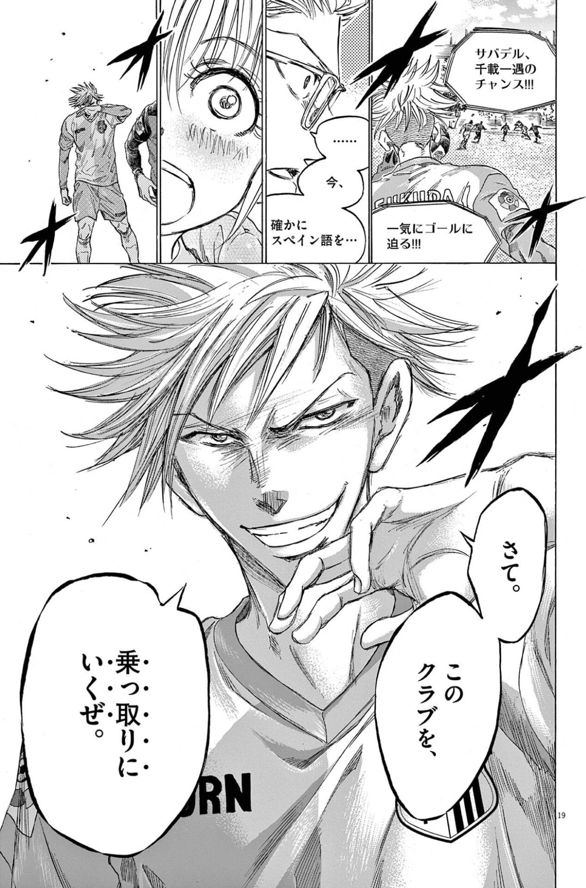
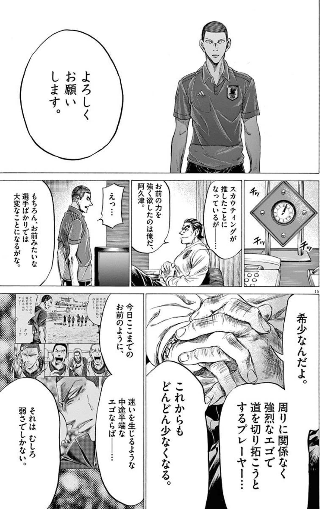

読書ログ #5 —— アオアシ × 国家のように見る × ディスタンクシオン
才能は、見出されるのを待つしかないのか。それとも、見させることが、できるのか。
1. 「見つけた」という視線
アオアシには、何度も「見つけた」という瞬間が出てくる。
ある試合の途中、福田が、ベンチに座る一人を視る。理屈で選んだようには見えない。ほとんど、勘だ。そして静かに告げる。「葦人。お前、行け」。その一言で、一人の人間の軌道が、変わりはじめる。

ここで、すでに不思議なことが起きている。福田は、なぜアシトを選べたのか。スコアでも、数値でもない。まだ言葉にならない何か——勘のようなもので、彼は才能を見出している。見出す眼そのものが、説明のつかない知なのだ。
この「見出す」は、美しい。でも、少し怖くもある。見つけてもらえなかった才能は、どうなるのか。見出す側の勘が、外れていたら? そもそもその勘は、何を「才能」と感じ、何を「凡庸」と切り捨てているのか?
今回は、この「見出す/見出される」という構造を、二冊の本と並べて視たい。ジェームズ・C・スコット『国家のように見る』と、ピエール・ブルデュー『ディスタンクシオン』だ。
2. 国家のように見る：可読化という力
スコットの『国家のように見る』は、近代国家がどうやって世界を統治してきたかを、ひとつの言葉で説明する。可読化(Legibility) だ。
国家は、複雑なものをそのままでは扱えない。だから、上から「読める」形に整える。バラバラだった土地を測量して地図にし、入り組んだ慣習地を区画に切り、まちまちだった名前を戸籍に登録し、多様な作物を単一の換金作物に揃える。整えれば、課税できる。徴兵できる。統治できる。
可読化そのものは、悪ではない。それなしには、公衆衛生も、インフラも、再分配も成り立たない。問題は、その先にある。
スコットが鋭いのは、ここだ。可読化された地図は、現実そのものではない。整えるとき、必ず何かがこぼれる。こぼれ落ちるのは、現場の人間が長い時間をかけて身につけた、言葉になりにくい知——スコットがメティス(Metis) と呼ぶものだ。土地の癖、天候の読み、その場かぎりの判断。台帳には載らない。けれど、それこそが現場を回していた。
可読化は、読めるものだけを残し、読めないものを「無い」ことにする。
3. サッカーは、才能を可読化する
サッカーの育成も、巨大な可読化の装置だ。
身長、足の速さ、得点数、走行距離。スカウトの評価シート。セレクションの合否。すべては、複雑な「うまさ」を、比較できる数値や役割へ整える営みだ。整えなければ、何百人もの選手を選べない。可読化は、ここでも必要悪として働く。
けれど、アオアシが何度も描くのは、その物差しから、こぼれる才能だ。
アシトの異常な俯瞰は、最初、どの評価軸にも載らなかった。「点を取る」「足が速い」という既存の物差しでは、彼は地方の荒削りなFWでしかない。彼の本当の才能——ピッチ全体をリズムとして視る知覚——は、まさにスコットの言うメティスだ。言葉になりにくく、シートに書けず、可読化の網からこぼれる。

だから問いは、こうなる。こぼれた才能は、本当に才能ではなかったのか。それとも、物差しのほうが、それを読めなかっただけなのか。
4. 見る目は、中立ではない
ここで、もう一冊。ブルデューの『ディスタンクシオン』を重ねたい。
このシリーズの #0 で、僕はこの本をこう要約した。美意識は、階級と履歴で作られる。「自分が良いと感じるもの」は、純粋な好みではなく、育ち・所属・学習の履歴が形づくったものだ、と。
これは、「才能を見抜く目」にも、そのまま効いてくる。見出す側の眼差しもまた、中立ではない。何を「うまい」と感じ、何を「考えている」と認め、何を「規格外」と呼ぶか——その基準自体が、特定の文化と歴史の産物だ。
やっかいなのは、ここだ。可読化の物差しが中立でないとき、こぼれ落ちるのは、いつも「別の文脈で育った知」のほうだ。これは、無意識の差別とほとんど地続きになる。誰かを劣っていると断じたわけではない。ただ、自分の物差しに載らないものを、見落としているだけ。けれど、見落とされた側にとっては、それは「居ないことにされる」のと同じだ。
そして、さきほどの「勘で見出す」眼も、この危うさと無縁ではない。勘とは、過去に視てきたものの蓄積だ。だから、見たことのある型の才能は拾えても、まだ誰も見たことのない型は、勘からもこぼれうる。中立な物差しなど、どこにもない。
5. 見出されないなら、見させる
では、こぼれた側は、ただ「見つけて」もらえる幸運を待つしかないのか。
アオアシの面白さは、ここでもう一つの道を描くところにある。見出されるのを待つのではなく、見させる。
アシトは、ある時から、自分が何者かを自分で定義しはじめる。

これは、可読化の構造への、静かな反逆だ。物差しに「読まれる」のを待つのではなく、自分から、読まれ方を提示する。「俺はこういうピースだ」と名乗り、そう視るほかなくする。
もっと荒々しい形もある。これは、福田自身の選手時代だ。言葉の通じない異国のクラブで、彼はこう言い切る。

実力は、誰より上だった。けれど、言葉が通じない。なら、プレーで「読まざるをえない」状態を作るしかない。誰の許可も待たず、結果で可視化をこじ開ける。可読化される客体であることをやめて、可読化を強いる主体になる。
言葉が通じないからこそ、可視化はほとんどプレーそのものに賭けられている。これは、メティスの側からの反撃だ。台帳に載らないなら、台帳を書き換えさせる。
——そして覚えておきたい。冒頭で、勘によって選手を見出していたあの福田が、かつては自分の腕で、こうやって読まれ方をこじ開けていた。見出す者は、たいてい、かつて見させる側だった人だ。
6. それでも、見出す者がいる
ただ、「乗っ取る」だけが答えではない。
全員が自力で可視化をこじ開けられるわけではない。荒削りなアシトを最初に拾ったのは、やはり見出す者——既存の物差しの外を視られる、福田や阿久津の眼だった。
良いスカウトとは、可読化の網を信じきらない人のことだ。シートの数値の向こうに、まだ言葉になっていないメティスを視ようとする。「点を取れない」の奥に「全体が視えている」を見つける。スコットの言い方を借りれば、現場知を、可読化で殺さない観測者だ。
そして、その見出す眼そのものもまた、言語化できない勘——観測者の側のメティスだ。福田がアシトを選んだ理由を、たぶん福田自身も完全には言葉にできない。だからこそ、その眼は尊い。そして、だからこそ危うい。さきほど見たように、勘は中立ではないからだ。
だから、見出す者と、見させる者は、対立しない。共犯だ。物差しを疑える眼が片側にいて、読まれ方を提示する意志がもう片側にいる。その二つが噛み合ったとき、こぼれていたはずの才能が、はじめて軌道に乗る。
怖いのは、どちらも欠けた場所だ。物差しを疑わない評価者しかいなくて、声を上げる余白もない。そこでは、メティスは静かにこぼれ落ちつづける。誰も悪意がないまま。
7. 道は、与えられない
アオアシのなかで、こう語られる場面がある。周りに関係なく、強烈なエゴで道を切り拓くプレーヤーは、希少だ、と。

道は、与えられない。可読化された世界は、すでにある区画と、すでにある役割を差し出してくる。そこに自分を当てはめれば、確かに「読まれやすく」はなる。でも、まだ物差しのない場所へ進む者は、自分で道を切り拓くしかない。
エゴという言葉は、ふだん少し嫌われる。けれど、ここでのエゴは、「自分の視え方を、まだ誰も読めなくても、信じる力」に近い。見出される前の段階を、独りで支えるための熱。それがなければ、こぼれた才能は、こぼれたまま消える。
8. 観測も、可読化だ
最後に、OrbitLens に繋げたい。
正直に言う。EIS のような観測装置は、可読化の側にいる。git の履歴という複雑な現実を、7つの軸へ整える。読める形にする。スコットの警告は、そっくりそのまま、自分に返ってくる。整えるとき、何がこぼれるのか。
点数で人を序列化した瞬間、観測はもっとも危うい可読化になる。「このスコアが高い/低い」という物差しは、台帳に載るメティスだけを才能と呼び、載らないものを「無い」ことにしてしまう。アシトの俯瞰が、最初どの軸にも載らなかったように。
僕が Signals, not Scores にこだわるのは、たぶんここだ。点で確定するのではなく、軌道として残す。読めないものを「無い」と断じる前に、「この軌道、まだ自分の物差しに載っていないだけでは?」と問う余白を残す。
そして、ブルデューの警告も忘れたくない。観測する側の眼差しも、中立ではない。だから OrbitLens には firewall があり、観測者を観測するという原則がある。見る目が、いつのまにか特定の文化の物差しになっていないか。望遠鏡そのものが、何かを最初から見落としていないか。
観測は、見出す装置にもなれるし、見落とす装置にもなれる。その分かれ目は、たぶん、自分の物差しを疑いつづけられるかどうかにある。
見つけてもらうのを待つだけでなく、見させることもできる。そして観測する側は、見落としていないかを、問いつづける。
才能は、見出されるのを待つしかない——とは、思いたくない。
取り上げた本
- ジェームズ・C・スコット『国家のように見る——なぜ国家の計画は失敗するのか』(みすず書房) — Amazon
- ピエール・ブルデュー『ディスタンクシオン——社会的判断力批判』(藤原書店) — Amazon
次回予告
次回 #6 も、アオアシ。今度は「見出された後」——育てる側に回る。人を育てるとは、言葉にできない見立てを渡すことなのかもしれない。リチャード・ドーキンス『利己的な遺伝子』と、マックス・ウェーバー『プロテスタンティズムの倫理と資本主義の精神』と並べて読む。
本記事は小林有吾『アオアシ』、ジェームズ・C・スコット『国家のように見る』、およびピエール・ブルデュー『ディスタンクシオン』への個人的な考察です。
OrbitLens / machuz